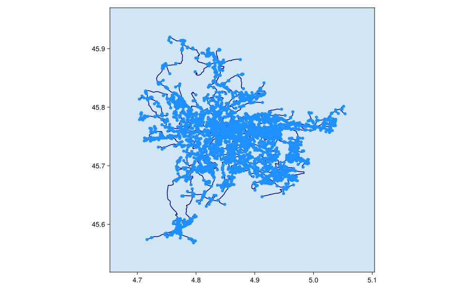

La Fibre Grand Lyon
Metropolitan public-initiative fibre route network
License, attribution, and processing
- License: etalab-2.0
- Attribution: Métropole de Lyon.
- Citation: Métropole de Lyon, Réseau d'initiative publique – La Fibre Grand Lyon, WFS layer teltelecom.fibrerip_thd.
- Modifications: CommunicationNetworkDatasets.jl normalized the source records into a simple undirected graph, normalized identifiers and units, and rendered this plot over raster basemap tiles.
- Use and redistribution: French Open Licence 2.0; normalized topology and distances are derived.
- Basemap: Protomaps © OpenStreetMap contributors; hosted by QuantumSavory.
Source metadata
| Field | Value |
|---|---|
| schema_version | 1 |
| dataset_id | grand_lyon_fibre |
| artifact_name | grand_lyon_fibre |
| name | La Fibre Grand Lyon |
| description | Metropolitan public-initiative fibre route network |
| upstream_url | https://data.grandlyon.com/geoserver/metropole-de-lyon/ows?SERVICE=WFS&VERSION=2.0.0&request=GetFeature&typename=metropole-de-lyon%3Atel_telecom.fibre_rip_thd&outputFormat=application%2Fjson&SRSNAME=EPSG%3A4326 |
| upstream_version | WFS response retrieved 2026-08-08 |
| upstream_checksum | sha256:11fd3773ef36ed41c2075aa752b506b79d2704bebfc3f79863ac0afaa69ccfdd |
| retrieval_date | 2026-08-08 |
| extraction_script_commit | 909d5c0411da90988903c738ebedab4a1976b49d |
| license_identifier | etalab-2.0 |
| license_url | https://www.etalab.gouv.fr/licence-ouverte-open-licence/ |
| citation | Métropole de Lyon, Réseau d'initiative publique – La Fibre Grand Lyon, WFS layer tel_telecom.fibre_rip_thd. |
| attribution | Métropole de Lyon. |
| redistribution_notes | French Open Licence 2.0; normalized topology and distances are derived. |
| network_count | 1 |
Network metadata
This table is the complete network catalog returned by networks("grand_lyon_fibre").
| schema_version | network_id | name | description | source_reference | node_count | edge_count | component_count | original_directed | coordinate_method | distance_method | license_identifier | license_url | citation | attribution | redistribution_notes | source_node_count | source_edge_count | self_loops_removed | parallel_edges_combined | normalized_segment_count |
|---|---|---|---|---|---|---|---|---|---|---|---|---|---|---|---|---|---|---|---|---|
| 1 | grand_lyon_rip | La Fibre Grand Lyon public-initiative network | Metropolitan public-initiative fibre route topology derived from the published WFS layer. | tel_telecom.fibre_rip_thd | 7709 | 8690 | 22 | false | source_geometry_vertex | geodesic_polyline | etalab-2.0 | https://www.etalab.gouv.fr/licence-ouverte-open-licence/ | Métropole de Lyon, Réseau d'initiative publique – La Fibre Grand Lyon, WFS layer tel_telecom.fibre_rip_thd. | Métropole de Lyon. | French Open Licence 2.0; graph topology and distances are derived from route geometry. | 0 | 11386 | 543 | 3097 | 11858 |
Network plots
La Fibre Grand Lyon public-initiative network
